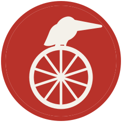

The Golden Pelican — mark lock
圖形層，不含任何文字。最小尺寸 8 mm。單色版與反白版必須成立。
Layers
The Golden Pelican — primary mark
mark-primary.svg
The Golden Pelican — primary mark
mark-primary-1colour.svg
The Golden Pelican — primary mark
mark-primary-reversed.svg
Minimum size — 24 / 32 / 48 / 72 / 120 px

On dark